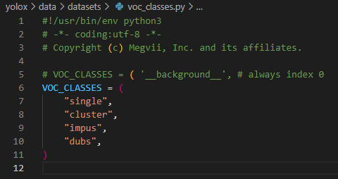
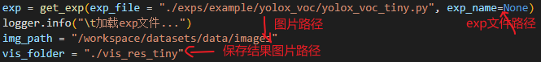
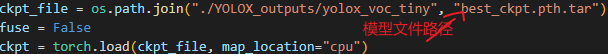

环境配置#
第一步：安装YOLOX
1 | git clone git@github.com:Megvii-BaseDetection/YOLOX.git |
第二步：安装apex
1 | # 如果不想训练模型，可跳过这步。 |
此处需要torch的cuda版本和外部环境的cuda版本一致，比如我们的服务器是10.2，那么torch的也要是10.2
可通过torch.version.cuda确认，最好是选择docker来配置。Windows也不推荐，即使是wsl。
第三步： 安装 pycocotools
1 | pip3 install cython; pip3 install 'git+https://github.com/cocodataset/cocoapi.git#subdirectory=PythonAPI' |
修改配置#
修改exps/example/yolox_voc/yolox_voc_s.py, 主要涉及类别和文件路径


修改yolox/data/datasets/__init__.py

修改yolox/data/datasets/voc_classes.py

开始训练#
python tools/train.py -f exps/example/yolox_voc/yolox_voc_s.py -d 1 -b 16 --fp16 -o -c yolox_s.pth
- -d 使用多少张显卡训练
- -b 批次大小
- –fp16 是否开启半精度训练
批量推理#
非官方实现，其实也就是for循环实现的。
tools/test_imgs.py:

